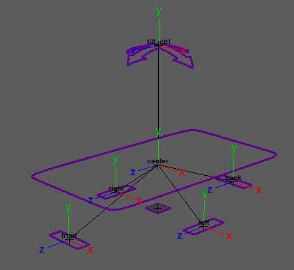

Guides:

Attributes:
A visibility attribute is added to the parent ctrl. [Video]
'Tilt' - Add a tilt ctrl enable tilting the entire vehicle from side to side and back and forth.
'Handling' - Add 'oversteer' and 'understeer' attributes to the 'driver_ctrl'.
'Shake' - Add shake attributes to the 'driver_ctrl' to simulate engine or road vibrations affecting the car.
'Shake Up Down Amount' - Specify the range of vertical shaking the vehicle will experience in Maya units.
'Shake Rotate Amount' - In degrees, specify the range the vehicle shake for 'front_back' and 'left_right'.
{As of version: 1.06.03} 'Add Four
Wheels' - This feature adds four wheels to the vehicle, each
with its own suspension system that affects the body. Re-templating is required to
position the wheel guides correctly.
[Since the wheels are both driven by and drive
the Vehicle Body, the suspension system for the wheels must be created within the
'Vehicle Body' node and cannot be placed on a separate node.]
'Suspension Upper Limit' - The limit each wheel can move up before affecting the vehicle body. The animator can modify this limit for each wheel through the 'wheel_bottom_ctrl' using the 'suspension_up_limit' attribute.
'Suspension Lower Limit' - The limit each wheel can move down before affecting the vehicle body. The animator can modify this limit for each wheel through the 'wheel_bottom_ctrl' using the 'suspension_down_limit' attribute.
Connections:
_____________________________________________
Get Arise at: https://www.ariserigging.com